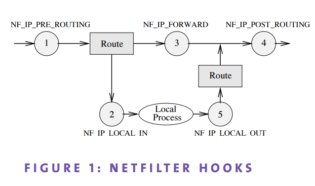
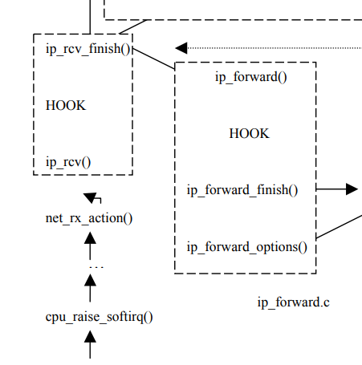
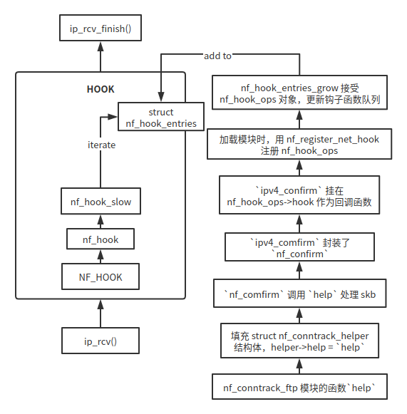

Netfilter 代码梳理
1. iptables

流量的去向是确定的, netfilter 做的就是在流量的必经之路设下关卡, 这些关卡又称为钩子. 为什么叫做钩子呢, 钩子就是用来挂东西的, 设想某些巨型衣架, 挂满了衣服, 你作为流量从中间穿过, 衣服就是钩子函数.
流量的必经之路很明确：
- 流量进来, 被 Router1 分流, 分流之前的钩子叫 PREROUTING
- 被 Router1 分流后一条路径通往协议栈, 进入协议栈之前的钩子叫 LOCAL_INPUT
- 有些流量只是经过当前主机, Router1 判断这些流量应被送到网口发送出去, 在网口之前首先进入钩子 FORWARD
- 有些流量是主机里面的进程发出来的, 这些经过 LOCAL_OUT 钩子, 然后进入 Router2, Router2 判断流量的目的是 localhost 还是外部网络
- 发出去的流量有两种, 转发的, 和主机本身发出的, 这两种最终汇合在网卡的发送队列里面, 由于它们汇合, 所以可以统一处理, 所以不难推断出 POST_ROUTING 这个钩子的存在意义.
1.1 iptables 的用法
命令： iptables 动作 条件 -j 目标
目标： 扩展 | 保留目标
保留目标： ACCEPT ...
作为工具没有特别值得研究的地方, 我见过几个用法（以后也许会写, 但其实在网上搜得到）：
- 给流量打上标记(connmark), 同时在 netfilter 的出口处设置 tc 限速(使用 htb 算法比如说), 具体细节还包括处理 ACK 等小包对限速的影响.
- 使用 conntrack 让已经建立的连接快速通过, 避免遍历下面的规则, 需要对有数据连接（second connection) 的协议特别留意, 需要额外配置对应的 connection tracking 模块.
- hashlimit 每 ip 限速.
- 给流量打上标记, 让它通过某些路由.
- 给自己电脑做一个 NAT, 让多个设备可以共享一个 IP 上网.
- 路由器科学上网（其实没必要, 太多规则, 或庞大的 ipset 会让网络有延迟, 应该做一个旁路由）.
这里关注的是 iptables 的底层, iptables 是 netfilter 的前端, 两者通过 netlink 交互(待确认)
2. netfilter 入口
参考 A Map of the Networking Code in Linux Kernel 2.4.20 , 留意 HOOK 所在位置, 流量在进出之间, 通过了 netfilter 的 HOOK.

/*
* IP receive entry point
*/
int ip_rcv(struct sk_buff *skb, struct net_device *dev, struct packet_type *pt,
struct net_device *orig_dev)
{
struct net *net = dev_net(dev);
skb = ip_rcv_core(skb, net);
if (skb == NULL)
return NET_RX_DROP;
return NF_HOOK(NFPROTO_IPV4, NF_INET_PRE_ROUTING,
net, NULL, skb, dev, NULL,
ip_rcv_finish);
}
NF_HOOK(include/linux/netfilter.h) 封装了 nf_hook, 后者的主要逻辑：
- 根据 L3 协议号（比如
NFPROTO_IPV4）找到对应的struct nf_hook_entries（钩子函数入口） nf_hook_slow(skb, &state, hook_head, 0), skb 要遍历所有钩子函数
static inline int nf_hook(u_int8_t pf, unsigned int hook, struct net *net,
struct sock *sk, struct sk_buff *skb,
struct net_device *indev, struct net_device *outdev,
int (*okfn)(struct net *, struct sock *, struct sk_buff *))
{
struct nf_hook_entries *hook_head = NULL;
[...]
// 找到函数
hook_head = rcu_dereference(net->nf.hooks_ipv[hook]);
[...]
// 执行
ret = nf_hook_slow(skb, &state, hook_head, 0);
}
如果没问题发生, 在最后执行 ip_rcv_finish, 这个回调函数的虚参名字叫 okfn: if things are ok then execute the fn
net/netfilter/nf_conntrack_core.c 实现部分核心函数, 不同的协议使用不同的 conntrack 实现, ftp 使用 net/netfilter/nf_conntrack_ftp.c, 原因是 ftp 有 data 连接, 如果 ftp 端口有变, 还需要重新加载 nf_conntrack_ftp 模块, 加上参数 port, 告诉内核目标端口为 xxx 的连接是 ftp, 内核才会发现某个连接是 ftp 的 related 连接.
下图展示了模块如何将自己的函数注册到钩子上去

3. netfilter module 结构
iptables 通过 -m 调用模块, iptables -m A 将调用 A 模块. 模块是一系列函数的集合, 这些函数按照一定的模式执行, 这个模式由 netfilter 规定, 模式规定了各接口的调用时机, 位置等, iptables 通过依赖注入把函数的具体实现（在模块中）挂在各接口上.
以下为各接口的作用：
match: skb 进模块之后调用checkentry: 插入规则的时候调用destroy: 删除规则时调用
此外还有通过 module_init, module_exit 注册的函数, 作用是增加/减少模块的引用计数, 内核不会因为删一条规则就调模块的 module_exit.
match 的原型：
/// include/linux/netfilter/x_tables.h
struct xt_match {
[...]
bool (*match)(const struct sk_buff *skb,
struct xt_action_param *);
[...]
}
每个 netfilter 模块都要实现这个接口, 以 conntrack 模块为例, .match 的一个实现为 conntrack_mt_v1, 模块作者根据 xt_action_param 提供的信息决定 skb 的去留和属性.
/// 重点关注 xt_action_param 的 matchinfo
static bool
conntrack_mt_v1(const struct sk_buff *skb, struct xt_action_param *par)
{
const struct xt_conntrack_mtinfo1 *info = par->matchinfo;
return conntrack_mt(skb, par, info->state_mask, info->status_mask);
}
/// 定义
struct xt_action_param {
union {
/// -m
const struct xt_match *match;
/// -j
const struct xt_target *target;
};
union {
const void *matchinfo, *targinfo;
};
const struct nf_hook_state *state;
/// fragment offset
int fragoff;
/// transport header
unsigned int thoff;
bool hotdrop;
};
xt_action_param 的来历：可以看函数 ipt_do_table, 根据 skb, nf_hook_state, xt_table 填充 xt_action_param 信息
acpar.fragoff = ntohs(ip->frag_off) & IP_OFFSET;
acpar.thoff = ip_hdrlen(skb);
acpar.hotdrop = false;
acpar.state = state;
/// 使用各模块的 match
xt_ematch_foreach(ematch, e) {
acpar.match = ematch->u.kernel.match;
acpar.matchinfo = ematch->data;
if (!acpar.match->match(skb, &acpar))
goto no_match;
}
4. connection tracking system
有一篇非常好的文章, 这里仅根据它的描述找相应代码.
4.1 在钩子上注册函数
将 nf_conntrack_in 注册到 PREROUTING Hook
/// nf_conntrack_in 是公共函数
/// 实际调用者：
/// ipv4_conntrack_in()
/// ipv4_conntrack_local()
/// ipv6_conntrack_in()
/// ipv6_conntrack_local()
/// 以 ipv4_conntrack_in 为例, 注册为 nf_hook_ops的 .hook
{
.hook = ipv4_conntrack_in,
.pf = NFPROTO_IPV4,
/// 这个位置表示 PREROUTING
.hooknum = NF_INET_PRE_ROUTING,
.priority = NF_IP_PRI_CONNTRACK,
}
4.2 连接跟踪
通过 resolve_normal_ct 找到 skb 对应的 conntrack, 如果没找到, 就创建一个新的.
先了解一个叫 tuple 的概念
tuple 的含义：数学定义上, tuple 是一个数量有限的元素的序列.
内核中 tuple 的定义：
A `tuple' is a structure containing the information to uniquely identify a connection. ie. if two packets have the same tuple, they are in the same connection; if not, they are not.
理解为 tuple 为数量有限的特征的序列（或集合, 毕竟顺序不重要）. 每个包都是独特的, 但在某些语境下有共同特征, 语境是连接的时候, 不难理解到, 共同特征是 srcip, destip, srcport, destport 等, 使用相同的 hash 函数可得出一样的结果. 由于有必要分辨方向, 所以一个连接需要 2 个 tuple.
整个流程： 拿到 skb 包 => 提取特征值 => 取哈希值 => 找到相应bucket => 找到对应连接记录 => 更新/获取信息
/// include/net/netfilter/nf_conntrack.h
struct nf_conn {
/// >>> hash tuple <<<
struct nf_conntrack_tuple_hash tuplehash[IP_CT_DIR_MAX];
}
/// hash tuple
/// hnnode 是双向链表的结点
struct nf_conntrack_tuple_hash {
struct hlist_nulls_node hnnode;
struct nf_conntrack_tuple tuple;
};
/// 双向链表结点
struct hlist_nulls_node {
struct hlist_nulls_node *next, **pprev;
};
/// nf_conntrack_in 调用 resolve_normal_ct
/* On success, returns 0, sets skb->_nfct | ctinfo */
static int
resolve_normal_ct(struct nf_conn *tmpl,
struct sk_buff *skb,
unsigned int dataoff,
u_int8_t protonum,
const struct nf_hook_state *state)
{
const struct nf_conntrack_zone *zone;
struct nf_conntrack_tuple tuple;
struct nf_conntrack_tuple_hash *h;
/// ESTABLISHED, RELATED...
enum ip_conntrack_info ctinfo;
struct nf_conntrack_zone tmp;
struct nf_conn *ct;
u32 hash;
/// 根据 skb 查找 tuple
if (!nf_ct_get_tuple(skb, skb_network_offset(skb),
dataoff, state->pf, protonum, state->net,
&tuple)) {
pr_debug("Can't get tuple\n");
return 0;
}
/* look for tuple match */
zone = nf_ct_zone_tmpl(tmpl, skb, &tmp);
hash = hash_conntrack_raw(&tuple, state->net);
/// 是否找到
h = __nf_conntrack_find_get(state->net, zone, &tuple, hash);
if (!h) {
/// 如果没找到, 创建一个
h = init_conntrack(state->net, tmpl, &tuple,
skb, dataoff, hash);
if (!h)
return 0;
if (IS_ERR(h))
return PTR_ERR(h);
}
/// 根据 h(类型是 struct nf_conntrack_tuple_hash)
/// >>>>> 找到 conntrack <<<<<<<<
ct = nf_ct_tuplehash_to_ctrack(h);
/// 更新 conntrack 状态
/* It exists; we have (non-exclusive) reference. */
if (NF_CT_DIRECTION(h) == IP_CT_DIR_REPLY) {
ctinfo = IP_CT_ESTABLISHED_REPLY;
} else {
/* Once we've had two way comms, always ESTABLISHED. */
if (test_bit(IPS_SEEN_REPLY_BIT, &ct->status)) {
pr_debug("normal packet for %p\n", ct);
ctinfo = IP_CT_ESTABLISHED;
} else if (test_bit(IPS_EXPECTED_BIT, &ct->status)) {
pr_debug("related packet for %p\n", ct);
ctinfo = IP_CT_RELATED;
} else {
pr_debug("new packet for %p\n", ct);
ctinfo = IP_CT_NEW;
}
}
/// 设置
nf_ct_set(skb, ct, ctinfo);
return 0;
}
/// 继续看如何根据 tuple 找到 conntrack
static inline struct nf_conn *
nf_ct_tuplehash_to_ctrack(const struct nf_conntrack_tuple_hash *hash)
{
/// 调用 container_of 宏, 从 hash 指针处找到包含 tuplehash(dir表示方向) 的 nf_conn, 返回其指针
return container_of(hash, struct nf_conn,
tuplehash[hash->tuple.dst.dir]);
}
/// 很明显了, 建立新连接的时候创建一个 nf_conn, 然后将 tuple 指针注册到 hashmap
另外有个不重要的细节： confirmed. 连接已经被跟踪时, confirmed is set.
/// >>> net/netfilter/nf_conntrack_proto.c
/// 在 NF_INET_POST_ROUTING 和 NF_INET_LOCAL_IN 两个钩子上关联函数
static const struct nf_hook_ops ipv4_conntrack_ops[] = {
{
.hook = ipv4_confirm,
.pf = NFPROTO_IPV4,
.hooknum = NF_INET_POST_ROUTING,
.priority = NF_IP_PRI_CONNTRACK_CONFIRM,
},
{
.hook = ipv4_confirm,
.pf = NFPROTO_IPV4,
.hooknum = NF_INET_LOCAL_IN,
.priority = NF_IP_PRI_CONNTRACK_CONFIRM,
},
};
ipv4_confirm 调用到 conntrack 模块的过程：
nf_confirmnf_conntrack_confirm__nf_conntrack_confirm
net/netfilter/nf_conntrack_core.c function __nf_conntrack_confirm():
- 从 skb 处获取 ct
- 从 ct 处获取 net
- 删除失效或者 unconfirmed 连接
- 增加
ct->ct_general.use - 标记为
IPS_CONFIRMED - 设置时间戳
4.3 分片数据处理
/// >>> net/ipv4/netfilter/nf_defrag_ipv4.c
static const struct nf_hook_ops ipv4_defrag_ops[] = {
{
.hook = ipv4_conntrack_defrag,
.pf = NFPROTO_IPV4,
.hooknum = NF_INET_PRE_ROUTING,
.priority = NF_IP_PRI_CONNTRACK_DEFRAG,
},
{
.hook = ipv4_conntrack_defrag,
.pf = NFPROTO_IPV4,
.hooknum = NF_INET_LOCAL_OUT,
.priority = NF_IP_PRI_CONNTRACK_DEFRAG,
},
};
defrag 操作都在 ROUTE 之前进行, 在一个缓冲区组装好包, 再继续发送出去.
4.4 HELPER 与 EXPECTATION
/// 有些应用层的协议很难跟踪, 比如 FTP 的被动模式有两条连接, 第二条连接的端口随机（主动模式的数据传输服务端口为 20）.
/// Conntrack 定义了一个叫做 helper 的机制去检测一条连接是否与另一个已经存在的连接相关.
/// >>> include/net/netfilter/nf_conntrack_helper.h
struct nf_conntrack_helper {
struct hlist_node hnode; /* Internal use. */
char name[NF_CT_HELPER_NAME_LEN]; /* name of the module */
/// 引用计数
refcount_t refcnt;
/// interesting...
struct module *me; /* pointer to self */
const struct nf_conntrack_expect_policy *expect_policy;
/* Tuple of things we will help (compared against server response) */
struct nf_conntrack_tuple tuple;
/* Function to call when data passes; return verdict, or -1 to
invalidate. */
int (*help)(struct sk_buff *skb,
unsigned int protoff,
struct nf_conn *ct,
enum ip_conntrack_info conntrackinfo);
[...]
};
/// 初始化 helper
/// >>> net/netfilter/nf_conntrack_helper.c
void nf_ct_helper_init(struct nf_conntrack_helper *helper,
u16 l3num, u16 protonum, const char *name,
u16 default_port, u16 spec_port, u32 id,
const struct nf_conntrack_expect_policy *exp_pol,
u32 expect_class_max,
int (*help)(struct sk_buff *skb, unsigned int protoff,
struct nf_conn *ct,
enum ip_conntrack_info ctinfo),
int (*from_nlattr)(struct nlattr *attr,
struct nf_conn *ct),
struct module *module)
{
/// 赋值
[...]
}
/// 另外定义了概念 expectation, 指一个在应该在一段时间内出现的连接, 比如第二条连接.
/// >>> include/net/netfilter/nf_conntrack_expect.h
struct nf_conntrack_expect {
/* Conntrack expectation list member */
struct hlist_node lnode;
/* Hash member */
struct hlist_node hnode;
/// 新的连接进来时, 应该是这个 tuple, 同时用 mask 进行过滤
/* We expect this tuple, with the following mask */
struct nf_conntrack_tuple tuple;
struct nf_conntrack_tuple_mask mask;
/* Function to call after setup and insertion */
void (*expectfn)(struct nf_conn *new,
struct nf_conntrack_expect *this);
/// 与 helper 建立关系
/* Helper to assign to new connection */
struct nf_conntrack_helper *helper;
/* The conntrack of the master connection */
struct nf_conn *master;
/* Timer function; deletes the expectation. */
struct timer_list timeout;
/* Usage count. */
refcount_t use;
/* Flags */
unsigned int flags;
/* Expectation class */
unsigned int class;
[...]
};
/// helper 查找每个包, 判断是否有第二条连接, 如果有则根据第二条连接的 pattern 创建一个 expecation, 并放入一个全局队列里面.
/// >>> net/netfilter/nf_conntrack_proto.c
/// 以 nf_confirm() 实现为例
unsigned int nf_confirm(struct sk_buff *skb, unsigned int protoff,
struct nf_conn *ct, enum ip_conntrack_info ctinfo)
{
const struct nf_conn_help *help;
///一个新连接进来的时候, conntrack 模块创建一个新的 ct, 并搜索 expectation list, 如果找不到匹配项, 就调用 helper 去处理连接.
help = nfct_help(ct);
if (help) {
const struct nf_conntrack_helper *helper;
int ret;
/* rcu_read_lock()ed by nf_hook_thresh */
helper = rcu_dereference(help->helper);
if (helper) {
/// 如果有, 利用 helper 对连接进行处理, 处理函数见下
ret = helper->help(skb,
protoff,
ct, ctinfo);
if (ret != NF_ACCEPT)
return ret;
}
}
[...]
}
/// 查找 \.help.*= 或 nf_ct_helper_init
/// 如果找到匹配项, 则认为新的连接是创建了 expectation 的连接(master conntrack)的 related 连接.
/// 举个 ftp 的例子
/// >>> net/netfilter/nf_conntrack_ftp.c
/// FTP 定义了若干 helper 去识别第二连接
static struct nf_conntrack_helper ftp[MAX_PORTS * 2] __read_mostly;
/// 通过 nf_ct_helper_init 初始化
nf_ct_helper_init(&ftp[2 * i], AF_INET, IPPROTO_TCP,
HELPER_NAME, FTP_PORT, ports[i], ports[i],
&ftp_exp_policy, 0, help,
nf_ct_ftp_from_nlattr, THIS_MODULE);
/// 这里需要关注的是核心 help 函数
static int help(struct sk_buff *skb,
unsigned int protoff,
struct nf_conn *ct,
enum ip_conntrack_info ctinfo)
{
[...]
/// 待创建的 expectation
struct nf_conntrack_expect *exp;
[...]
/// 如果连接已经建立, 直接返回
if (ctinfo != IP_CT_ESTABLISHED &&
ctinfo != IP_CT_ESTABLISHED_REPLY) {
pr_debug("ftp: Conntrackinfo = %u\n", ctinfo);
return NF_ACCEPT;
}
[...]
for (i = 0; i < ARRAY_SIZE(search[dir]); i++) {
found = find_pattern(fb_ptr, datalen,
search[dir][i].pattern,
search[dir][i].plen,
search[dir][i].skip,
search[dir][i].term,
&matchoff, &matchlen,
&cmd,
search[dir][i].getnum);
if (found) break;
}
[...]
/// 创建 exp
exp = nf_ct_expect_alloc(ct);
[...]
/// 放到 expectation list
nf_ct_expect_put(exp);
[...]
}
/// 其中使用 ftp_search 去识别报文
static struct ftp_search {
const char *pattern;
size_t plen;
char skip;
char term;
enum nf_ct_ftp_type ftptype;
int (*getnum)(const char *, size_t, struct nf_conntrack_man *, char, unsigned int *);
} search[IP_CT_DIR_MAX][2] = {
[IP_CT_DIR_ORIGINAL] = {
{
.pattern = "PORT",
.plen = sizeof("PORT") - 1,
.skip = ' ',
.term = '\r',
.ftptype = NF_CT_FTP_PORT,
.getnum = try_rfc959,
},
{
.pattern = "EPRT",
.plen = sizeof("EPRT") - 1,
.skip = ' ',
.term = '\r',
.ftptype = NF_CT_FTP_EPRT,
.getnum = try_eprt,
},
},
[IP_CT_DIR_REPLY] = {
{
.pattern = "227 ",
.plen = sizeof("227 ") - 1,
.ftptype = NF_CT_FTP_PASV,
.getnum = try_rfc1123,
},
{
.pattern = "229 ",
.plen = sizeof("229 ") - 1,
.skip = '(',
.term = ')',
.ftptype = NF_CT_FTP_EPSV,
.getnum = try_epsv_response,
},
},
};
/// find_pattern 时将 skb_header_pointer（代表整个包）传给各个判断标准
5. 结论
看了一堆代码后发现收获并不大, 但至少有几个点弄清楚了
NF_HOOK里面存在nf_hook_entries,里面是模块注册到上面的函数, 流量单位 skb 依次通过这些函数, 如果可以通过, 返回NF_ACCEPT, 或跳转到其他目标.- 模块注册的时候需要指明注册到哪个钩子, 并要按照接口实现具体的模块功能.
- 连接跟踪模块是一个很具有代表性的模块, 它可以识别同一个连接的 skb, 从 skb 中提取特征值之后根据魔法宏找到连接结构体
struct nf_conn,然后更新其状态.
参考
- https://making.pusher.com/per-ip-rate-limiting-with-iptables/
- https://blog.packagecloud.io/eng/2016/10/11/monitoring-tuning-linux-networking-stack-receiving-data-illustrated/
- https://blog.packagecloud.io/eng/2016/06/22/monitoring-tuning-linux-networking-stack-receiving-data/
- Netfilter’s connection tracking system
- https://www.netfilter.org/documentation/HOWTO/netfilter-hacking-HOWTO-4.html